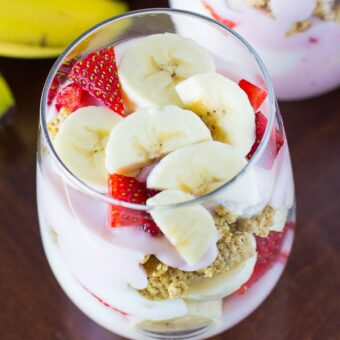

Home
Strawberry Banana Yogurt Parfaits

Description
These parfaits are packed with protein and fresh fruit that will fill you up until lunch time or as an afternoon snack to get through the rest of the day.
Ingredients
- 6 fresh strawberries, sliced
- 2 bananas, sliced
- 1/2 cup granola
- 1 cup vanilla yogurt
- 1 1/2 cups strawberry yogurt
Steps
- Add 1/4 cup strawberry yogurt into each glass. Top with 1/4 cup vanilla yogurt.
- Add 1/4 cup of the sliced strawberries and bananas into each glass.
- Top fruit with 1/4 cup strawberry yogurt into each glass.
- Add 1/4 cup of granola into each glass.
- Top with an additional scoop of yogurt and slices of strawberries and bananas, if desired.
Home